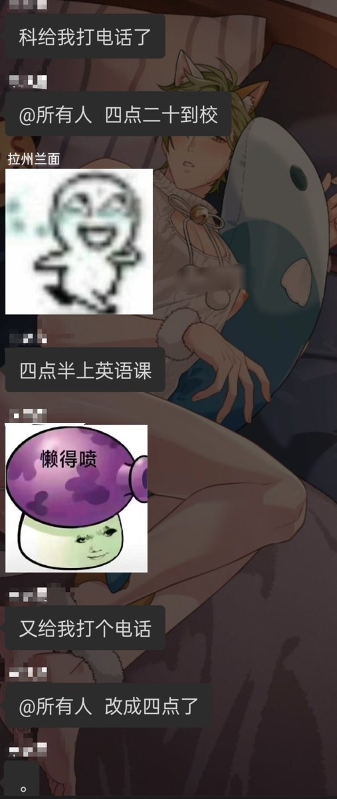

♡†Isuna†♡
@Isunia177991
@yueluoshanhe2 萌萌的呀宝宝！

零点鸟(⎚ ̯⎚)₊୭
@yueluoshanhe2
不要…高三…不要……虽然不应该这样想的但是就是很讨厌啊……在学校感觉精神情感都要被扭曲了……毕业季快来吧好不好好不好……啊啊为什么下周要考试啊啊
上三年学胖成肥猪然后出来又考个垃圾大学，，，
啊啊能不能别欺负傻子啊 https://t.co/RiFDbUPEX3